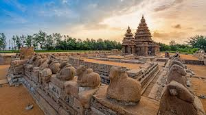

Mamallapuram (also known as Mahabalipuram), is a town in Chengalpattu district in the southeastern Indian state of Tamil Nadu, best known for the UNESCO World Heritage Site of 7th- and 8th-century Hindu Group of Monuments at Mahabalipuram. It is one of the famous tourist sites in India. The ancient name of the place is Thirukadalmallai. It is a part of Chennai Metropolitan Area. It is a satellite town of Chennai.